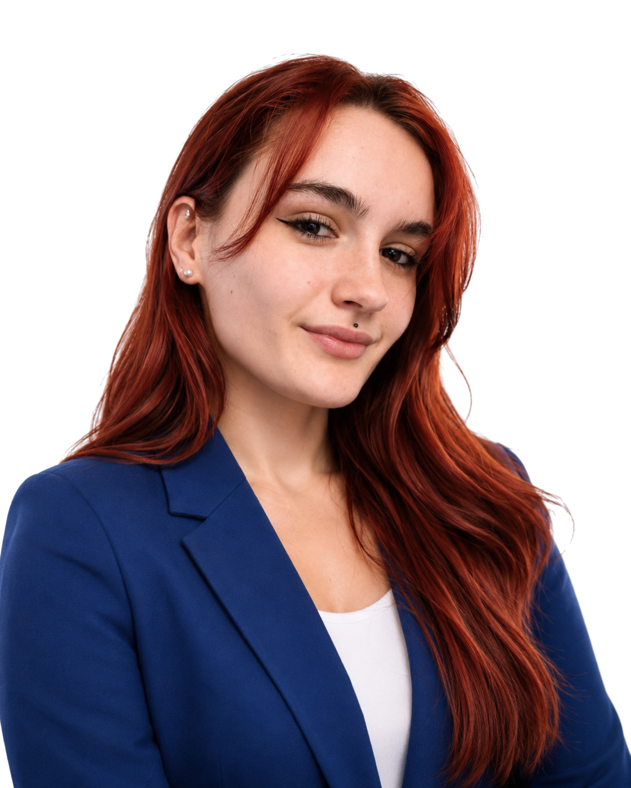

Sara Hofmann
Mein Name ist Sara Hofmann, und ich verbinde als freiberufliche Beraterin und Masterstudentin in Systems Engineering Mechatronik technisches Fachwissen mit interdisziplinärem Denken, kreativen Problemlösungen und einer ausgeprägten Leidenschaft für nachhaltige Innovationen. Mein Ziel ist es, komplexe Herausforderungen nicht nur zu bewältigen, sondern sie als Chance zu nutzen, um zukunftsorientierte und praxisnahe Lösungen zu entwickeln.
Mein Weg war dabei alles andere als geradlinig: Mit einem Bachelor in Industrial Engineering (Wirtschaftsingenieurwesen) habe ich bewusst den Schritt in die technisch anspruchsvollere Welt der Mechatronik gewagt. Dieser Quereinstieg hat mich vor völlig neue Herausforderungen gestellt – von der Einarbeitung in Themen wie Regelungstechnik und Programmierung bis hin zur Entwicklung einer technischen Denkweise. Doch gerade diese Erfahrungen haben mich gelehrt, mich schnell in neue Fachbereiche einzuarbeiten, Verbindungen zwischen Disziplinen herzustellen und mich kontinuierlich weiterzuentwickeln.

Heute kombiniere ich meine Stärke im analytischen Denken mit einem ausgeprägten Gespür für praktische Umsetzbarkeit. Besonders wichtig ist mir dabei, nicht nur technische Lösungen zu schaffen, sondern auch Menschen in diesen Prozess einzubinden – sei es durch Lehre, Nachhilfe oder die gemeinsame Arbeit an Projekten.
Was mich antreibt, ist die Freude daran, Wissen zu vermitteln, Dinge verständlich zu machen und dabei immer wieder neue Perspektiven einzunehmen. Neben meiner Arbeit und meinem Studium finde ich Ausgleich und Inspiration in der Zeit mit meinem Hund und meinem Pferd. Sie erinnern mich täglich daran, wie wichtig es ist, im Moment zu bleiben und mit Energie und Gelassenheit an Herausforderungen heranzugehen.
Mein Weg bisher
- Bachelorarbeit bei Mapal Dr. Kress KG: Neugeschäftsgenerierung – Analyse und Konzeption neuer Geschäftsmodelle
- Werkstudententätigkeit bei Zeiss Jena: Bearbeitung vielseitiger Projekte mit einem Schwerpunkt auf Datenanalyse mit MATLAB
- Lehrauftrag an der Hochschule Aalen: Kosten- und Leistungsrechnung – Vermittlung komplexer Themen praxisnah und verständlich
- Freiberufliche Unterstützung: Optimierung von Vorlesungen inhaltlich und visuell sowie aktive Mitwirkung bei der Durchführung
- Nachhilfe in Mathematik: Förderung von Schülern und Studierenden, um nicht nur Wissen zu vermitteln, sondern auch Selbstvertrauen und Eigenständigkeit zu stärken
Was mich auszeichnet
- Technische Expertise: MATLAB, Simulink, Creo – gezielt eingesetzt für Datenanalyse, Modellierung und Konstruktion
- Interdisziplinäres Denken: Kombination aus Wirtschaft, Technik und Mechatronik für innovative Lösungen
- Leidenschaft fürs Lehren: Wissen vermitteln, verständlich machen und nachhaltig verankern
- Flexibilität und Balance: Beruf, Studium und meine Leidenschaft für Tiere (Hund & Pferd) erfolgreich vereinbaren
- Analytisches Problemlösen: Komplexe Fragestellungen strukturiert und kreativ angehen
- Effiziente Kommunikation: Fähigkeit, komplexe technische Inhalte klar und zielgruppengerecht zu vermitteln
- Lernbereitschaft und Anpassungsfähigkeit: Kontinuierliches Lernen und schnelles Einarbeiten in neue Themen, z. B. der Quereinstieg von Wirtschaftsingenieurwesen in Mechatronik
Warum ich?
Ich stehe für eine einzigartige Kombination aus fundierter technischer Expertise, einem strategischen Blick aus der Perspektive des Wirtschaftsingenieurwesens und der Fähigkeit, komplexe Zusammenhänge klar und praxisnah zu vermitteln. Ob in der Beratung, der Lehre oder in Projekten – ich arbeite lösungsorientiert und mit einem frischen Blick für das Wesentliche.